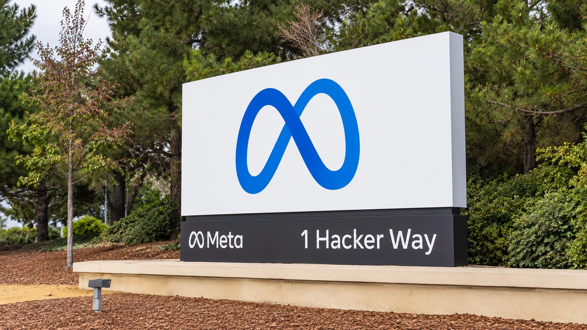

Meta Plans Up to $95 Billion in Equity Financing for Its AI Expansion
Meta launched roughly $35 billion of offerings and outlined another $60 billion of share sales to fund AI, raising questions about timing and dilution.

Meta Platforms announced an equity-financing plan of up to $95 billion Monday to support its artificial intelligence expansion. The Facebook, Instagram and WhatsApp parent launched roughly $35 billion of public offerings and outlined another $60 billion of potential share sales. The announcement puts the cost of funding AI capacity alongside the question of how much revenue that capacity can produce.
The full headline amount is a plan, rather than cash already received. Meta describes the initial package as $22.5 billion of common stock linked to forward-sale agreements and about $12.5 billion of depositary shares representing mandatory convertible preferred stock. The proposed additional program is a separate, later financing channel, with execution still uncertain.
For existing shareholders, the central trade-off is straightforward: new capital can pay for expansion, but additional shares can spread future earnings across a larger ownership base. Our guide to stock offerings and dilution explains why raising money and creating shareholder value are separate achievements. The eventual return on the funded investment determines whether that trade-off proves worthwhile.
The cash does not all arrive on announcement day
Meta says it will not initially receive proceeds from the common shares sold by the forward purchasers. Cash would arrive through subsequent settlement. The proposed $60 billion at-the-market program is not expected to begin before the first quarter of 2027, after its new Class C stock starts trading. No agreement for that program has yet been entered into.
That timing affects how readers should interpret the total. A financing announcement can describe access to future funding without increasing today's cash balance by the same amount. An at-the-market program also generally allows shares to be sold over time. It is not equivalent to one buyer handing over a fixed sum for an immediately completed transaction.
Reuters reported that Nvidia, AMD and Broadcom indicated interest in buying up to $5 billion of Meta's Class A shares. Meta makes clear that those indications are nonbinding. They should not be presented as completed investments or guaranteed purchases. The interest nevertheless puts attention on relationships between a major buyer of computing infrastructure and its chip suppliers.
A profitable business can still consume cash
Meta's October 21 quarterly results reported $64.60 billion of revenue, up 26% from a year earlier, and $32.79 billion of operating cash flow. Capital expenditures, including principal payments on finance leases, were $34.91 billion. Its defined free cash flow was therefore negative $2.12 billion, despite positive accounting profit and substantial cash coming through the business.
Those figures explain why the financing debate cannot be settled by pointing to revenue growth alone. Cash needed for buildings and equipment can exceed cash generated by operations in a particular period. Our free cash flow guide separates that investment demand from profit, borrowing and proceeds from selling shares. Each measure answers a different financial question.
The same results set 2026 capital expenditure expectations at $135 billion to $145 billion and showed $82.45 billion of cash and marketable securities at September 30. A cash balance provides flexibility, but it is a dated stock of resources, not a recurring source of income. A capital-spending forecast, meanwhile, describes planned investment rather than a guaranteed future return.
Investors need evidence of the payoff
The commercial test is whether additional computing capacity improves the economics of advertising and new products enough to justify its cost. Stronger engagement may help, but revenue, operating costs, equipment utilization and replacement spending all affect the result. A successful fundraising would establish access to capital; it would not by itself validate every project that capital supports.
Our coverage of data-center power, delivery and financing risks explains why infrastructure commitments deserve scrutiny alongside model launches. For Meta, the next useful milestones are the actual offering terms, the amount and timing of proceeds, and subsequent evidence that investment is translating into durable cash generation. Monday's announcement makes that financing question unusually explicit.
Sources and methodology
Sources checked October 26, 2026. Company statements, reported findings and forecasts are attributed in the text. Financial and operational implications are editorial analysis. The generated cover is illustrative.